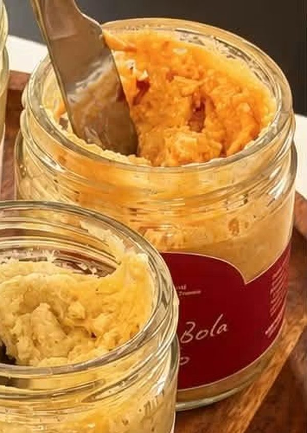
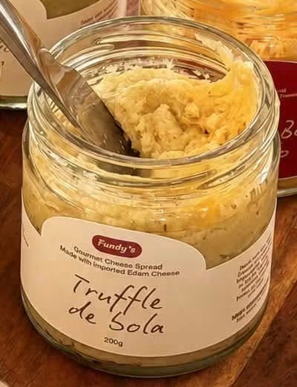
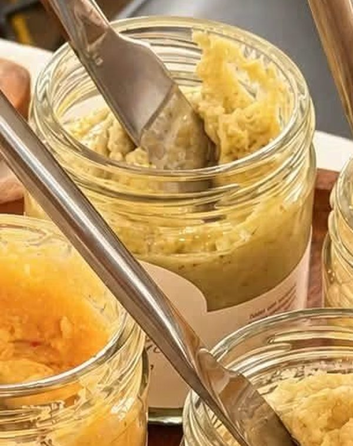

Quezo de Bola
200g · Gourmet Cheese Spread
The classic. Rich, savory Edam cheese spread with the flavor Filipinos love at Noche Buena and beyond.
₱250
Gourmet Palaman · Made in the Philippines
Fundy's turns imported Edam cheese into creamy, spreadable palaman in four flavors. Quezo de Bola, Pimiento, Truffle and Basil Pesto, ready for your pandesal, crackers and pasta.

The Spreads
Every 200g jar is made with imported Edam cheese. Pick a flavor and order from our Shopee or TikTok Shop store.

200g · Gourmet Cheese Spread
The classic. Rich, savory Edam cheese spread with the flavor Filipinos love at Noche Buena and beyond.
₱250

200g · Gourmet Cheese Spread
Creamy Edam cheese with pimiento for a sweet, savory twist on the classic Filipino sandwich filling.
₱250

200g · Gourmet Cheese Spread
Earthy truffle meets smooth Edam cheese. A little luxury for toast, crackers and pasta.
₱280

200g · Gourmet Cheese Spread
Fresh basil pesto blended into Edam cheese. Herby, creamy and great on bread or stirred into pasta.
₱250

Why Fundy's
Fundy's is a Filipino-made cheese spread built on one idea: start with good cheese. Every jar is made with imported Edam cheese, the same style of cheese behind the beloved quezo de bola, then blended into spreads you can use every day.
Serving Ideas
Split it, spread it, done. The classic Filipino merienda.
Pair truffle or pimiento with crackers for easy party bites.
Use as palaman for loaf bread, ensaymada or sliders.
Stir a spoonful of basil pesto through warm pasta for a quick creamy sauce.
Add a jar to your charcuterie or Noche Buena spread.
A four-jar set makes an easy, tasty regalo.
Where to Buy
Our full range is available on Shopee and TikTok Shop. We also pop up at bazaars and markets, where you can taste before you buy. Follow us for the next one.

Good to Know
Palaman is the Filipino word for a sandwich filling or spread. Fundy's is a gourmet cheese palaman made with imported Edam cheese, ideal for pandesal, loaf bread, crackers and more.
Quezo de Bola, Quezo de Bola Pimiento, Truffle de Sola and Basil Pesto, each in a 200g jar.
Every Fundy's spread is made with imported Edam cheese, the same style of cheese behind the Filipino holiday favorite quezo de bola.
Order through our Shopee and TikTok Shop stores, or find us at bazaars and pop-up markets.
Spread it on warm pandesal, toast or crackers, fold it into sandwiches, stir it through hot pasta, or serve it on a cheese board.